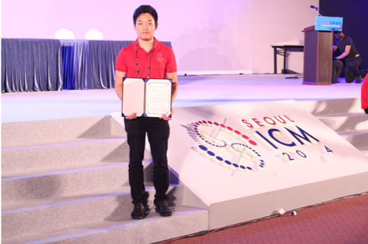
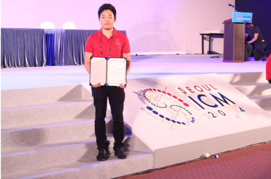

Jae Yoon Chun


- Nelson Mandela -
Research Interests
- Cryptography / Quantum Information
- Machine Learning
- Natural Language Processing
Decision Science and Data Science
- Regret Analysis
- A distributed consensus algorithm for decision making
Academic Projects
Education

The University of Edinburgh
School of Mathematics
College of Science and Engineering
Bachelor of Science with Honours Mathematics, September 2010 - June 2016
I am greatly fortunate to have Dr. Nikolaos Bournaveas as my supervisor and Dr. Aram Karakhanyan as my final year project advisor.
Courses: Mathematics Project, Mathematical Programming, Decision-Making under Uncertainty, Stochastic Modelling, Numerical Partial Differential Equations, Fundamentals of Operational Research, Combinatorics and Graph Theory, Nonlinear Optimization, Fundamentals of Optimization, Honours Complex Variables, Honours Differential Equations, Honours Analysis, Honours Algebra, Numerical Linear Algebra and Applications, Linear Programming, Modelling and Soution, Introduction to Number Theory, Water and Wastewater Systems 3, Probability, Statistics, Proofs and Problem Solving, Accelerated Algebra and Calculus for Direct Entry, Several Variable Calculus and Differential Equations, Fundamentals of Pure Mathematics, Computing and Numerics, Facets of Mathemathics, Practical Calculus, Solving Equations, Geometry and Convergence, Group Theory: An Introduction to Abstract Mathematics, Differential Equation Modelling and Solution, Linear Programming and Numerical Analysis, Chinese 1, Introductory to Spanish Language
(Total Number of Credits: 480)
College Preparatory Diploma (High School Diploma), August 2006 - June 2010
UCAS: 340 points
AP Scholar with Distinction 2010
(AP Calculus AB, AP Calculus BC, AP Chemistry)
Teaching Experience
Work Experience
Software Engineer at Finotek
April 2017 – November 2018
I appreciate your guidance Mr. Seul Gi Lee and Dr. Deokyoon Ko, who is now a professor in Industry-University Cooperation at Sogang University!
- Explaining Blockchain-based social media platform and participating in Blockchain conference
- Explaining Machine Learning chatbot in Myanmar
- Winning Customer Service Digitization award at Asia Start-up Challenge in Hong Kong

Research Assistant at vtw
October 2016 – December 2016
Volunteer at SEOUL ICM 2014 International Congress of Mathematicians
June 2014 – August 2014
- 2014 International Congress of Mathematicians Public and Media Relations Award, awarded by Seoul ICM 2014 Chairman of Public and Media Relations
- It was an honor to meet Professor Cédric Villani and Professor Manjul Bhargava
 
